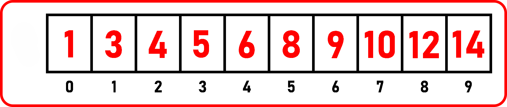

Une recherche dichotomique est un algorithme de recherche beaucoup plus efficace que la recherche séquentielle.
Attention
la recherche dichotomique ne fonctionne que sur des listes triées, comme celle-ci :

L’idée générale est d’essayer de déterminer la zone approximative où se trouve la valeur que l’on cherche, puis de vérifier si elle s’y trouve.
Cette animation pourrait vous aider à mieux comprendre.
Fonctionnement :
Elle fonctionne en divisant le tableau en deux et en comparant la valeur cherchée avec la valeur du milieu.
Puisque le tableau est trié, on peut savoir si la valeur est à gauche ou à droite de cet élément central.
Le sous-tableau correspondant devient alors notre nouveau tableau de travail, et on recommence le processus jusqu’à ce qu’on trouve l’élément, ou qu’on ne puisse plus diviser.